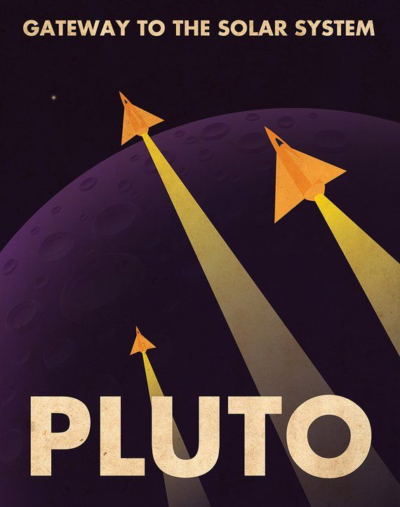
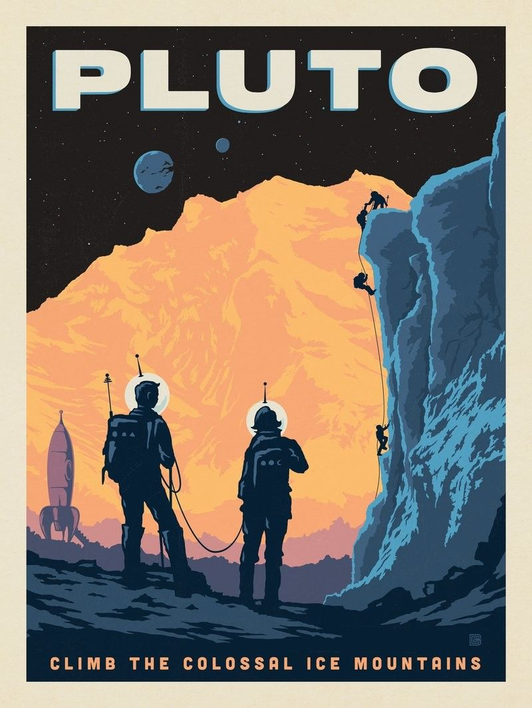
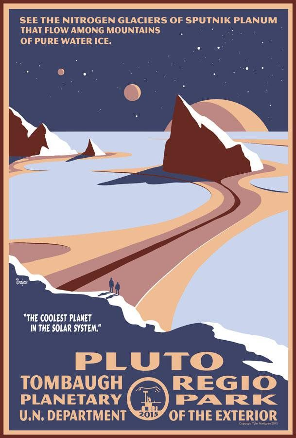
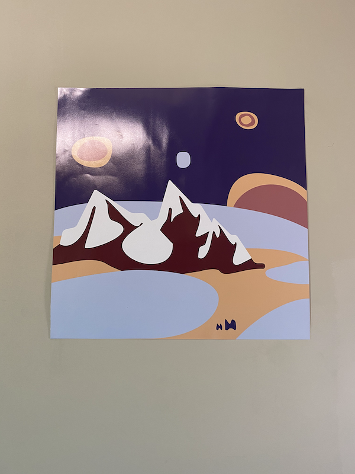

Making posters
I’ve started learning graphic design by making posters for my room. It’s a low stakes project — I’m making posters for my own viewing pleasure. At the same time, I’ve got a bit of fire under me to make progress. I don’t like staring at my room’s blank walls.
Here I’ll explain my process for making my first poster, starting from scratch with near-zero graphic design experience and ending with a mounted poster on my wall.
Start with planning
I begin by considering what I want a poster to mean to me. Since I stare at my walls every day, my posters can remind me of principles I care about. When looking at my posters, others might see an ordinary image while I’d appreciate their hidden significance.
For example, an important principle to me is to “zoom out”. “Zoom out” reminds me to shift perspective and escape the minutiae of everyday anxieties. This principle became the foundation of my first poster.
Next, I consider which visual metaphors would best represent a principle. For my first poster, I thought a great representation of “zoom out” would be a view of earth from a faraway planet. I’ll refer to this poster as Pale Blue Dot.
Finally, I think about the visual style of the poster. I consider styles that are straightforward for a beginner to implement. I also think about repurposing my favorite elements of others’ graphic design, such as contrasting colors and curvy lines. For Pale Blue Dot, I decided to create it in the style of vintage imagery reinterpreted through a minimalist lens.
Make a mood board
One great way to make things is to remix things you already like.
With a visual goal in mind, I start assembling a collection of posters I like. For Pale Blue Dot, I used Google image search with the keywords “vintage space poster”.
Here are some images that stood out that made it onto my mood board:



This last image in particular heavily influenced Pale Blue Dot. Also, I’m not sure why each of these involves Pluto.
Armed with inspiration, I move on to creating the poster.
Design with Figma
You should skip this section if you’re not interested in the software I use to make posters.
Vector illustration software is great for designing posters. Vector graphics are created using mathematical formulas rather than specifying the colors of specific pixels. This means vector graphics can be resized to any arbitrary size without compromising quality.
Adobe Illustrator is the flagship vector illustration tool. Figma is also a great option. Used primarily for designing mobile apps and websites, Figma also has many vector illustration features. It’s simple to use, syncs work across devices, and, best of all, free.
Learning Figma for rudimentary vector illustration takes three hours. The following resources are most helpful:
1. The “Shapes and Tools” section of Figma’s help center documentation. The following articles are especially relevant: Frames and Groups, Masks, Arc Tool, and, most importantly, Vector Networks.
2. Tutorials such as this “Figma - Vector Graphics for Beginners” video or this “Creating Simple Character Illustrations Using Figma” written guide.
3. The Bezier Game to learn how to use the Pen Tool. The Pen Tool is a staple of vector illustration software — it allows you to draw custom lines, curves, and shapes. The Bezier Game is fun and well-designed. It also gets you comfortable with the Pen Tool in 15 minutes.
After going through these resources, I was ready to illustrate vector graphics in Figma.
For Pale Blue Dot, my approach was to recreate elements from my mood board. While doing so, I wanted to simplify the illustration. For example, I decided to restrict each object to three layers. I also eliminated patterns and textures from shapes — each layer has a single solid color.
Following many iterations, I ended up with this:
Print the poster
The last step is to print the posters.
In San Francisco where I live, typical printing options like Fedex and UPS unfortunately don’t work. They don’t allow you to print custom-sized posters.
I used Ibarra Brothers to print a 2 foot by 2 foot Pale Blue Dot poster. They’re based in the Mission and are great to work with. I sent them a PDF file and they printed it within 30 minutes on high quality semi-gloss paper.
Here’s the printed poster mounted on my wall:

I was surprised there wasn’t a simple and affordable online service for poster printing. I’d love a service that’d allow me to upload a PDF, specify size and print material, and receive a custom printed poster in the mail within 2 days.
Final thoughts
The process of making Pale Blue Dot was incredibly fun and empowering. Now, I’m excited to make more posters.
Having a tangible, purposeful goal (i.e. prettying my room) gave me the motivation to get started. For future creative projects, I’ll keep in mind the value of setting a clear, meaningful intention before starting.
If you have any thoughts, comments, or ideas based on anything I shared, please
reach out via Twitter and let’s discuss!